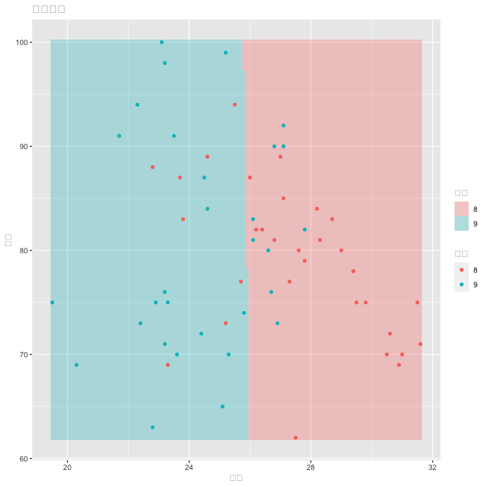
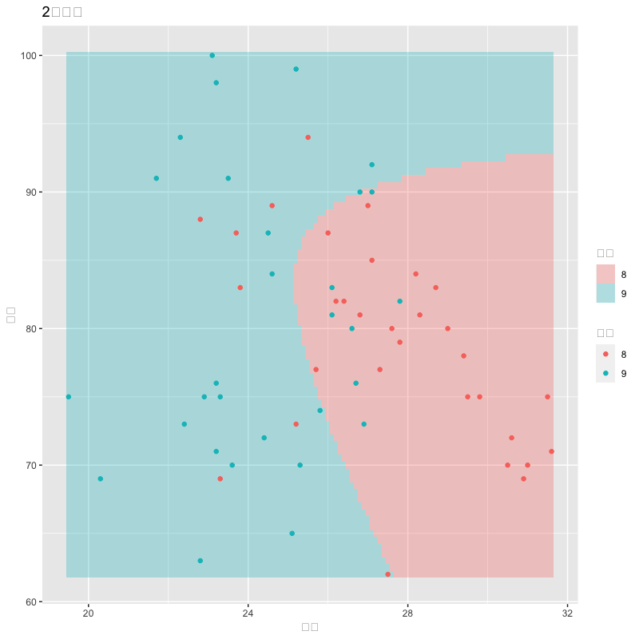

分析の評価
(Press ? for help, n and p for next and previous slide)
村田 昇
\(X=\boldsymbol{x}\) が与えられた後に予測されるクラス
\begin{equation} p_k(\boldsymbol{x})=P(Y=k|X=\boldsymbol{x}) \end{equation}
判別関数 : \(\delta_k(\boldsymbol{x})\) (\(k=1,\dots,K\))
\begin{equation} p_k(\boldsymbol{x}) < p_l(\boldsymbol{x}) \Leftrightarrow \delta_k(\boldsymbol{x}) < \delta_l(\boldsymbol{x}) \end{equation}
事後確率の順序を保存する計算しやすい関数
共分散行列 \(\Sigma\) : すべてのクラスで共通
\begin{equation} f_k(\boldsymbol{x}) = \frac{1}{(2\pi)^{q/2}\sqrt{\det\Sigma}} \exp\left(-\frac{1}{2}(\boldsymbol{x}-\boldsymbol{\mu}_k)^{\mathsf{T}} \Sigma^{-1}(\boldsymbol{x}-\boldsymbol{\mu}_k)\right) \end{equation}
線形判別関数 : \(\boldsymbol{x}\) の1次式
\begin{equation} \delta_k(\boldsymbol{x}) = \boldsymbol{x}^{\mathsf{T}}\Sigma^{-1}\boldsymbol{\mu}_k -\frac{1}{2}\boldsymbol{\mu}_k^{\mathsf{T}}\Sigma^{-1}\boldsymbol{\mu}_k +\log\pi_k \end{equation}
共分散行列 \(\Sigma_k\) : クラスごとに異なる
\begin{equation} f_k(\boldsymbol{x}) = \frac{1}{(2\pi)^{q/2}\sqrt{\det\Sigma_k}} \exp\left(-\frac{1}{2}(\boldsymbol{x}-\boldsymbol{\mu}_k)^{\mathsf{T}} \Sigma_k^{-1}(\boldsymbol{x}-\boldsymbol{\mu}_k)\right) \end{equation}
2次判別関数 : \(\boldsymbol{x}\) の2次式
\begin{equation} \delta_k(\boldsymbol{x}) = -\frac{1}{2}\det\Sigma_k -\frac{1}{2}(\boldsymbol{x}-\boldsymbol{\mu}_k)^{\mathsf{T}} \Sigma_k^{-1}(\boldsymbol{x}-\boldsymbol{\mu}_k) +\log\pi_k \end{equation}
Fisherの基準
\begin{equation} \text{maximize}\quad \boldsymbol{\alpha}^{\mathsf{T}} B\boldsymbol{\alpha} \quad\text{s.t.}\quad \boldsymbol{\alpha}^{\mathsf{T}} W\boldsymbol{\alpha}=\text{const.} \end{equation}
単純な誤り
\begin{equation} \text{(誤り率)} =\frac{\text{(誤って判別されたデータ数)}} {\text{(全データ数)}} \end{equation}
| 真値は陽性 | 真値は陰性 | |
|---|---|---|
| 判別は陽性 | 真陽性 (True Positive) | 偽陽性 (False Positive) |
| 判別は陰性 | 偽陰性 (False Negative) | 真陰性 (True Negative) |
| 判別は陽性 | 判別は陰性 | |
|---|---|---|
| 真値は陽性 | 真陽性 (True Positive) | 偽陰性 (False Negative) |
| 真値は陰性 | 偽陽性 (False Positive) | 真陰性 (True Negative) |
定義
\begin{align} \text{(真陽性率)} &=\frac{TP}{TP+FN} \qquad\text{(true positive rate)}\\ \text{(真陰性率)} &=\frac{TN}{FP+TN} \qquad\text{(true negative rate)}\\ \text{(適合率)} &=\frac{TP}{TP+FP} \qquad\text{(precision)}\\ \text{(正答率)} &=\frac{TP+TN}{TP+FP+TN+FN} \qquad\text{(accuracy)} \end{align}
感度 (sensitivity) あるいは 再現率 (recall)
\begin{equation} \text{(真陽性率)} =\frac{TP}{TP+FN} \end{equation}
特異度 (specificity)
\begin{equation} \text{(真陰性率)} =\frac{TN}{FP+TN} \end{equation}
精度
\begin{equation} \text{(正答率)} =\frac{TP+TN}{TP+FP+TN+FN} \end{equation}
定義 (F-measure, F-score)
\begin{align} F_{1}&=\frac{2}{{1}/{\text{(再現率)}}+{1}/{\text{(適合率)}}}\\ F_{\beta}&=\frac{\beta^{2}+1}{{\beta^{2}}/{\text{(再現率)}}+{1}/{\text{(適合率)}}} \end{align}
定義 (Cohen’s kappa measure)
\begin{align} p_{o} &=\frac{TP+TN}{TP+FP+TN+FN} \qquad\text{(accuracy)}\\ p_{e} &=\frac{TP+FP}{TP+FP+TN+FN}\cdot\frac{TP+FN}{TP+FP+TN+FN}\\ &\quad +\frac{FN+TN}{TP+FP+TN+FN}\cdot\frac{FP+TN}{TP+FP+TN+FN}\\ \kappa &= \frac{p_{o}-p_{e}}{1-p_{e}} = 1-\frac{1-p_{o}}{1-p_{e}} \end{align}
温度と湿度による9/10月の線形判別

Figure 1: 線形判別
温度と湿度による9/10月の2次判別

Figure 2: 2次判別
線形判別の混同行列
[,1] [,2] [,3] [1,] "予測値＼真値" "9" "10" [2,] "9" "28" "5" [3,] "10" "2" "26"
2次判別の混同行列
[,1] [,2] [,3] [1,] "予測値＼真値" "9" "10" [2,] "9" "28" "5" [3,] "10" "2" "26"
線形判別の評価指標
[,1] [,2] [1,] "Accuracy" "Kappa" [2,] "0.885" "0.771"
[,1] [,2] [,3] [,4] [,5] [1,] "Sensitivity" "Specificity" "Precision" "Recall" "F1" [2,] "0.933" "0.839" "0.848" "0.933" "0.889"
2次判別の評価指標
[,1] [,2] [1,] "Accuracy" "Kappa" [2,] "0.885" "0.771"
[,1] [,2] [,3] [,4] [,5] [1,] "Sensitivity" "Specificity" "Precision" "Recall" "F1" [2,] "0.933" "0.839" "0.848" "0.933" "0.889"
最大最小と平均の関係から以下が成り立つ
\begin{equation} \min(\text{再現率},\text{適合率}) \le F_{1} \le\max(\text{再現率},\text{適合率}) \end{equation}さらに相加・相乗平均の関係から
\begin{equation} F_{1} \le\text{(相乗平均)} \le\text{(相加平均)} \end{equation}も成り立つ
相関係数の定義に従って計算すればよい
\begin{equation} \rho = \frac{\mathrm{Cov}(Y,\hat{Y})} {\sqrt{\mathrm{Var}(Y)\mathrm{Var}(\hat{Y})}} \end{equation}
例えば分子の共分散は以下のように計算される
\begin{align} \mathrm{Cov}(Y,\hat{Y}) &= \mathbb{E}[(Y-\mathbb{E}[Y])(\hat{Y}-\mathbb{E}[\hat{Y}])]\\ &= \mathbb{E}[Y\hat{Y}]-\mathbb{E}[Y]\mathbb{E}[\hat{Y}]\\ &= \frac{TP}{N}-\frac{TP+FN}{N}\frac{TP+FP}{N}\\ &= \frac{TP(TP+FN+FP+TN)}{N^{2}}\\ &\qquad- \frac{(TP+FN)(TP+FP)}{N^{2}}\\ &= \frac{TP\cdot TN - FP\cdot FN}{N^{2}} \end{align}
同様に分母の分散は以下のようになる
\begin{align} \mathrm{Var}(Y) &= \mathbb{E}[Y^{2}]-\mathbb{E}[Y]^{2}\\ &= \frac{(TP+FN)(TN+FP)}{N^{2}}\\ \mathrm{Var}(\hat{Y}) &= \mathbb{E}[\hat{Y}^{2}]-\mathbb{E}[\hat{Y}]^{2}\\ &= \frac{(TP+FP)(TN+FN)}{N^{2}} \end{align}
したがって以下のようにまとめられる
\begin{equation} \rho = \frac{TP\cdot TN-FP\cdot FN} {\sqrt{(TP+FP)(TP+FN)(TN+FP)(TN+FN)}} \end{equation}
winequality-red.csv
UC Irvine Machine Learning Repository で公開されている Wine Quality Data Set の一部
以下に download せずに読み込む方法を紹介します
wq_org <- read.csv("https://archive.ics.uci.edu/ml/machine-learning-databases/wine-quality/winequality-red.csv",
sep=";") # データの区切りが ";" となっている
wq_data <- transform(wq_org,
quality=as.factor( # qualityを再分類
ifelse(quality %in% 7:10, "A",
ifelse(quality %in% 5:6, "B" ,"C"))))
caret::confusionMatrix()caret: 評価のためのパッケージ判別結果の評価
install.packages("caret") # 右下ペインの package タブから install
library(caret) # または require(caret)
confusionMatrix(data, reference)
## data: 判別関数による予測ラベル (factor)
## referenc: 真のラベル (上と同じfactorである必要がある)
10月と11月の気温と湿度のデータを抽出する
tw_data <- read.csv("data/tokyo_weather.csv")
tw_subset <- transform(subset(tw_data,
subset= month %in% c("10","11"),
select=c(temp,humid,month)),
month=as.factor(month)) # 因子にする
lda() と qda() はオプションで LOO交叉検証を行うことができるオプションの指定方法
est <- lda(formula, data, CV=TRUE)
est$class # LOO CV による予測結果
## 特定のデータを除いて判別関数を構成し，そのデータの予測を行っている
est <- qda(formula, data, CV=TRUE)
est$class # LOO CV による予測結果
## 2次判別についても同様
caret::train()
caret パッケージの関数 train() で実行可能
train(formula, data,
method,
trControl=trainControl(method="cv", number))
## formula: Rの式
## data: データフレーム
## method: 推定を行う関数 method="lda"/"qda" などを指定
## trControl: 学習方法の指定
## trainControl のオプション
## method: 評価方法など指定 method="cv"/"LOOCV"
## number: k-重交叉検証のブロック数 (k)
https://archive.ics.uci.edu/ml/datasets/Wine+Quality
Wine Quality Data Set
P. Cortez, A. Cerdeira, F. Almeida, T. Matos and J. Reis. Modeling wine preferences by data mining from physicochemical properties. In Decision Support Systems, Elsevier, 47(4):547-553. ISSN: 0167-9236.
以下では winequality-red.csv を利用
説明変数 (based on physicochemical tests)
1 - fixed acidity
2 - volatile acidity
3 - citric acid
4 - residual sugar
5 - chlorides
6 - free sulfur dioxide
7 - total sulfur dioxide
8 - density
9 - pH
10 - sulphates
11 - alcohol
目的変数 (based on sensory data)
12 - quality (score between 0 and 10)
実際のデータの一部
fixed.acidity volatile.acidity citric.acid residual.sugar 1 fixed.acidity volatile.acidity citric.acid residual.sugar 2 7.4 0.7 0 1.9 3 7.8 0.88 0 2.6 4 7.8 0.76 0.04 2.3 5 11.2 0.28 0.56 1.9 6 7.4 0.7 0 1.9 7 7.4 0.66 0 1.8 8 7.9 0.6 0.06 1.6 9 7.3 0.65 0 1.2 10 7.8 0.58 0.02 2 11 7.5 0.5 0.36 6.1
実際のデータの一部 (続き)
chlorides free.sulfur.dioxide total.sulfur.dioxide density 1 chlorides free.sulfur.dioxide total.sulfur.dioxide density 2 0.076 11 34 0.9978 3 0.098 25 67 0.9968 4 0.092 15 54 0.997 5 0.075 17 60 0.998 6 0.076 11 34 0.9978 7 0.075 13 40 0.9978 8 0.069 15 59 0.9964 9 0.065 15 21 0.9946 10 0.073 9 18 0.9968 11 0.071 17 102 0.9978
実際のデータの一部 (続き)
pH sulphates alcohol quality
1 pH sulphates alcohol <NA>
2 3.51 0.56 9.4 B
3 3.2 0.68 9.8 B
4 3.26 0.65 9.8 B
5 3.16 0.58 9.8 B
6 3.51 0.56 9.4 B
7 3.51 0.56 9.4 B
8 3.3 0.46 9.4 B
9 3.39 0.47 10 A
10 3.36 0.57 9.5 A
11 3.35 0.8 10.5 B
警告メッセージ:
`[<-.factor`(`*tmp*`, ri, value = "quality") で:
不正な因子水準です。NA が発生しました
線形判別 (訓練誤差/予測誤差)
[,1] [,2] [,3] [,4] [1,] "予測値＼真値" "A" "B" "C" [2,] "A" "85" "64" "2" [3,] "B" "132" "1242" "53" [4,] "C" "0" "13" "8"
[,1] [,2] [,3] [,4] [1,] "予測値＼真値" "A" "B" "C" [2,] "A" "83" "65" "2" [3,] "B" "134" "1239" "55" [4,] "C" "0" "15" "6"
2次判別 (訓練誤差/予測誤差)
[,1] [,2] [,3] [,4] [1,] "予測値＼真値" "A" "B" "C" [2,] "A" "139" "138" "2" [3,] "B" "77" "1138" "46" [4,] "C" "1" "43" "15"
[,1] [,2] [,3] [,4] [1,] "予測値＼真値" "A" "B" "C" [2,] "A" "120" "141" "4" [3,] "B" "96" "1133" "50" [4,] "C" "1" "45" "9"
予測誤差の比較 (線形)
[,1] [,2] [1,] "Accuracy" "Kappa" [2,] "0.831" "0.322"
[,1] [,2] [,3] [,4] [,5] [,6] [1,] "" "Sensitivity" "Specificity" "Precision" "Recall" "F1" [2,] "Class: A" "0.382" "0.939" "0.0952" "0.952" "0.325" [3,] "Class: B" "0.99" "0.553" "0.868" "0.286" "0.382" [4,] "Class: C" "0.939" "0.0952" "0.452" "0.902" "0.143"
予測誤差の比較 (2次)
[,1] [,2] [1,] "Accuracy" "Kappa" [2,] "0.789" "0.334"
[,1] [,2] [,3] [,4] [,5] [,6] [1,] "" "Sensitivity" "Specificity" "Precision" "Recall" "F1" [2,] "Class: A" "0.553" "0.859" "0.143" "0.895" "0.479" [3,] "Class: B" "0.97" "0.453" "0.886" "0.164" "0.553" [4,] "Class: C" "0.859" "0.143" "0.498" "0.872" "0.153"